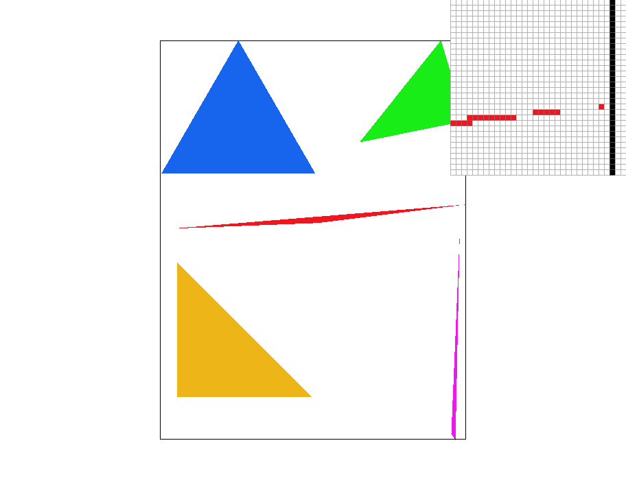
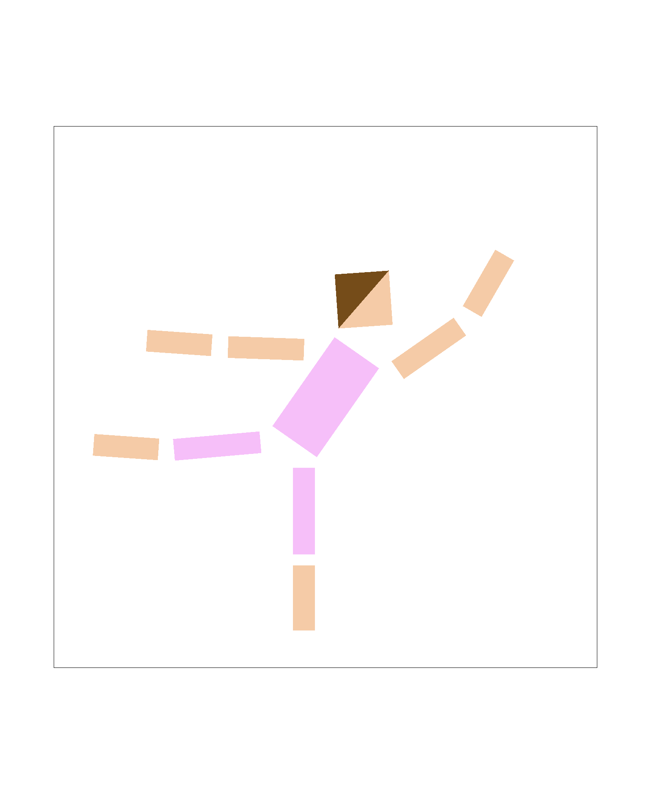
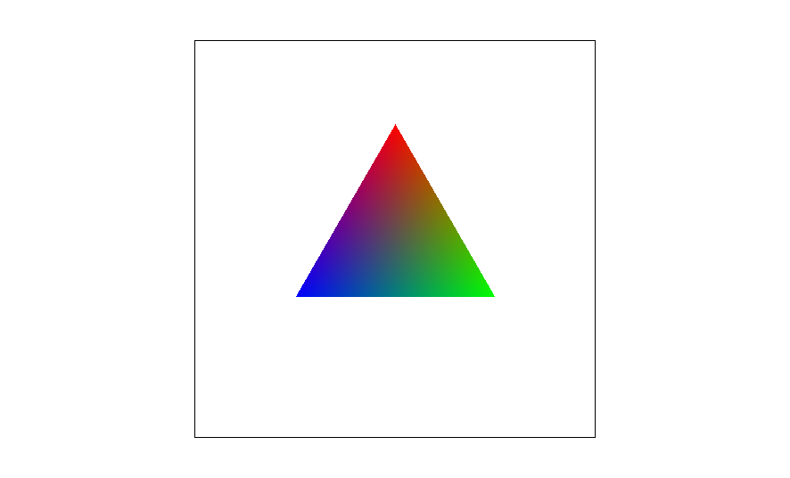
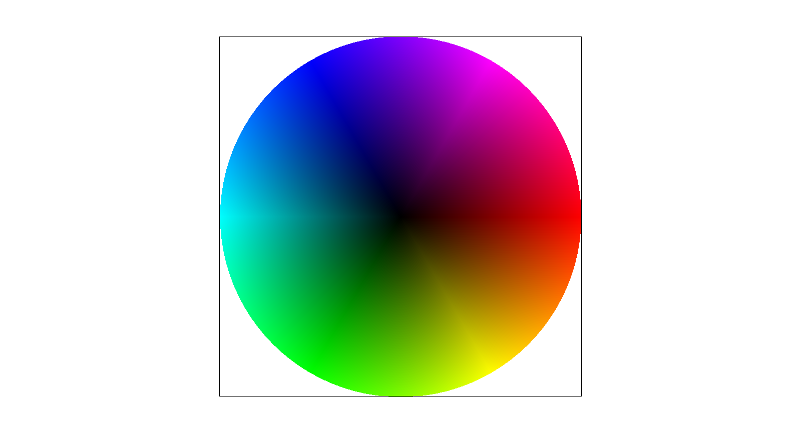
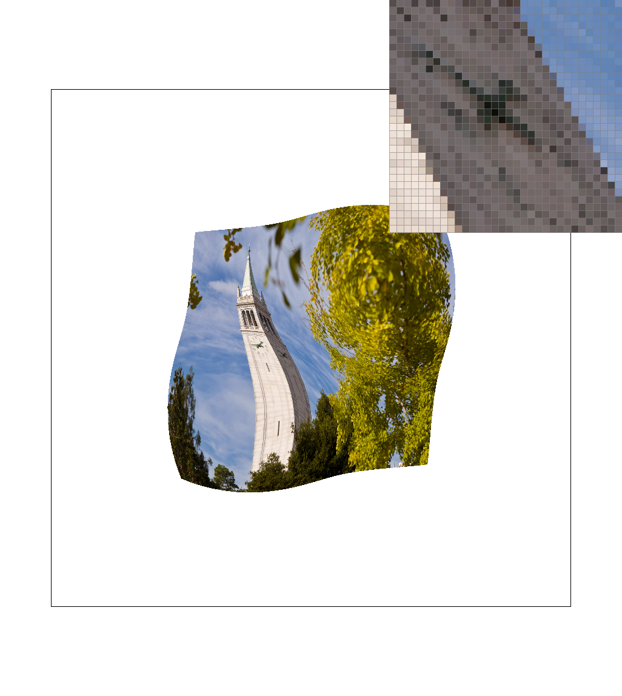
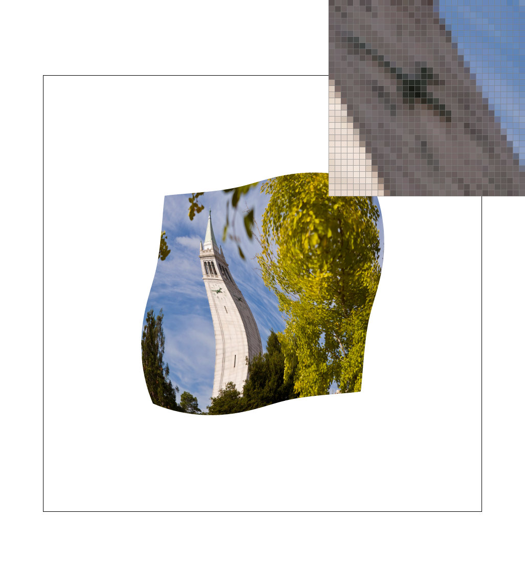
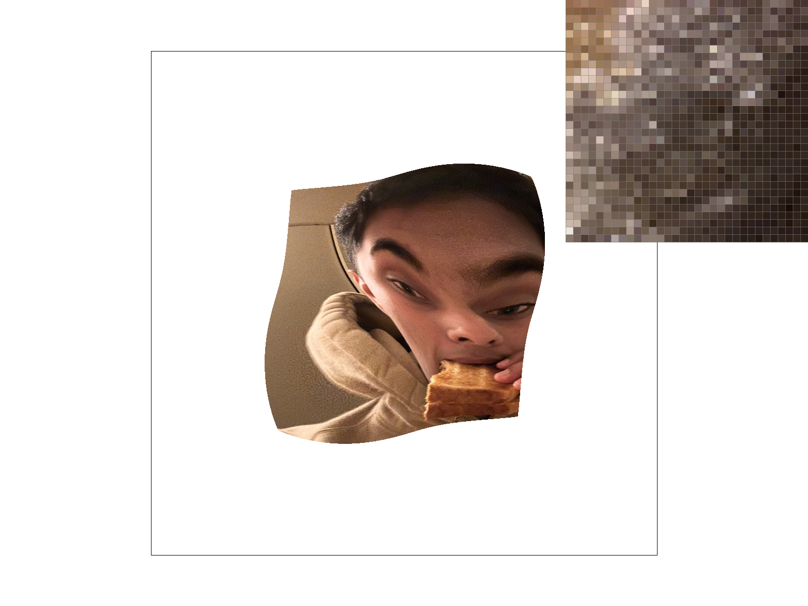

In this homework, we explore various techniques for rasterizing a triangle. Our first task implements basic triangle rasterization. From there, we reduce aliasing using supersampling and sampling with barycentric coordinates. In the end, we implement level sampling with mipmaps to further reduce aliasing in textured images. This homework is a good introduction to rendering detailed images with colored triangles while experimenting with different techniques that made the final image smoother! It is interesting to compare the effects of each technique and see how they influenced the final image.
To rasterize triangles, we first compute the bounding box around the triangle by taking the minimum and maximum x and y coordinate values of the triangle's 3 vertices. Next, we create the three lines that define our triangle using a helper function that returns a lambda representing the line equation through two given points. Additionally, we determine which side of the edge is inside the triangle by examining the sign of the dot product of the line and the third vertex of the triangle. Then, we iterate through each point inside the bounding box and check whether it is inside the triangle using the following test:
For each edge of the triangle, we use the corresponding lambda and sign to determine whether the sample point outputs a non-negative distance. If it does for all edges, that means the point is in the triangle and we can color in the pixel.
Our algorithm is exactly the one that checks whether each sample is within the bounding box - certainly our algorithm is no worse than itself.
In the test4 image, the skinny corners of the thin red triangle are interesting because they demonstrate aliasing artifacts when viewed at sufficiently low resolution.
To implement supersampling, we first scale the sample buffer by the sampling rate - a larger sampling rate corresponds to effectively a larger sample buffer. Then, for each pixel in the frame buffer, instead of only looking at the center of the pixel, we take multiple samples of the pixel and add them in the corresponding positions within the sample buffer. Finally, when we resolve the framebuffer, we set the color of the pixel in the frame buffer to the (unweighted) average of the supersampled pixels from the sample buffer.
This helps us antialias our triangles because a pixel that is partly inside and partly outside of a triangle can be colored more lightly than a pixel that lies fully inside the triangle. This better helps create a smoother transition effect near difficult edges of the triangle cmpared to a binary inside/outside test.
As we can see, increasing the sampling rate makes the skinny triangle corner appear blurrier and smoother, as opposed to appearing jagged. The supersampling helps smooth the appearance of these skinny edges because it allows us to distinguish between pixels that are fully inside or outside the triangle with those whose pixel centers may not accurately represent the true color of the pixel. This is especially apparent in the thin corner of the skinny red triangle, where certain pixel centers may lie inside the triangle despite the majority of the pixel being outside the triangle, or vice versa.
We turned cubeman into a cube-ballerina doing an arabesque. To do this, we translated, rotated, and scaled each of the cubeman's body parts to create the arabesque pose.
Barycentric coordinates are a way to express points inside a triangle as a weighted sum of the triangle's vertices. Each point in the triangle can be expressed by a set of 3 coordinates, each corresponding to how much the given vertex of the triangle influences the position and color of the point.
In the example above, each vertex of the triangle is colored one of the primary colors, and points on the interior of the triangle are colored based on the distance-weighted sum of the colors of the vertices. For example, a point that is closer to the red vertex will be colored more red than green or blue, and a point that is closer to the green vertex will be colored more green than red or blue.
The below example shows our result on test 7.
Pixel sampling is the process of determining what color to assign to a pixel based on the texture coordinates of the pixel. This is significant because it allows us to map textures to triangles even in situations where the pixels in the texture map do not align perfectly with the pixels in the frame buffer.
In our implementation, we follow a similar process as rasterizing a triangle but use barycentric coordinates to find the proportion of each texel coordinate. We perform an inverse transform to see where a screen pixel would lie on the texture. As mentioned before, this mapped pixel generally will not coincide perfectly with a pixel in the texture map, so we must perform interpolation of some kind to determine the color of the pixel in the framebuffer. Then, we take the texel coordinate and find the color in the texture map.The two main methods that we are concerned with are nearest-neighbor sampling and bilinear sampling. Nearest-neighbor interpolation assigns the framebuffer pixel the color of the (spatially) closest pixel in the texture map. In bilinear interpolation, we use the four nearby coordinates to find the texel coordinates that we are sampling from. Then, we use the lerp function to assign the framebuffer pixel the color of the (weighted linearly by distance) average of the four nearest pixels in the texture map.
|
|

|
|
|

|
In the zoomed-in images of clock on the side of the Campanile, we can see that when supersampling is not performed, nearest-neighbor interpolation produces aliased results (looking at the artifacts caused by numerals on the clock face), while bilinear interpolation produces smoother, yet blurrier results. When supersampling is performed, most of the aliasing artifacts disappear and the two methods produce similar results.
Level sampling is a trick that helps reduce aliasing when redering minified textures while saving on computational cost. Normally, when displaying minified textures, we would like to perform some kind of successive downsampling to avoid aliasing artifacts caused by downsampling a high-resolution texture. By pre-computing multi-level mipmaps, we can improve performance by simply choosing the appropriate mipmap level, avoiding the need to load, blur, and downsample the high-resolution texture each time.
In our implementation, we calculate barycentric coordinates for nearby coordinates as well and find the length between the points. From there, we use the distances to calculate the appropriate mipmap level. For nearest, we round the level and sample at that level. For bilinear, we take the samples from the two closest levels and computed a weighted average to find the final color.
In pixel sampling, bilinear interpolation sampling provides a smoother image than nearest pixel sampling. Bilinear sampling does not increase the memory usage and has about the same efficiency as nearest sampling. When we perform level sampling, we can see that it is the most effective way to reduce antialiasing. This method requires a bit more memory but is quite efficient since we are just indexing into the appropriate mipmap and finding the color. Supersampling is simple to implement but has a few drawbacks, especially in the memory usage because of the buffer size. This causes the method to be the most inefficient but does a decent job in antialiasing.
|
|

|
|
|
|